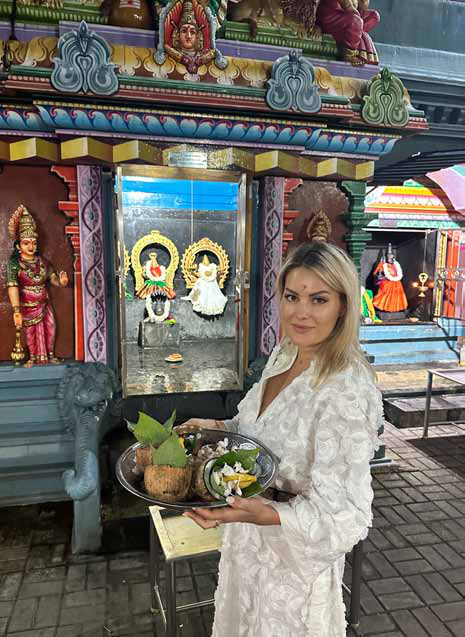
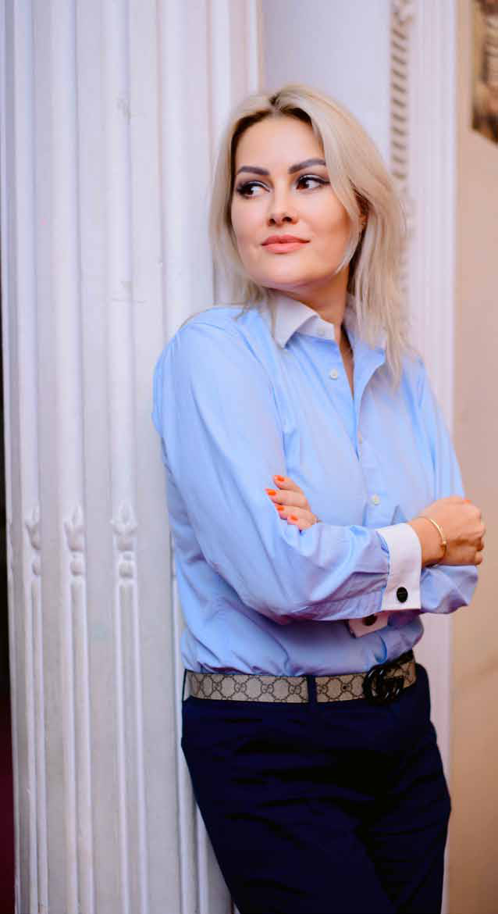
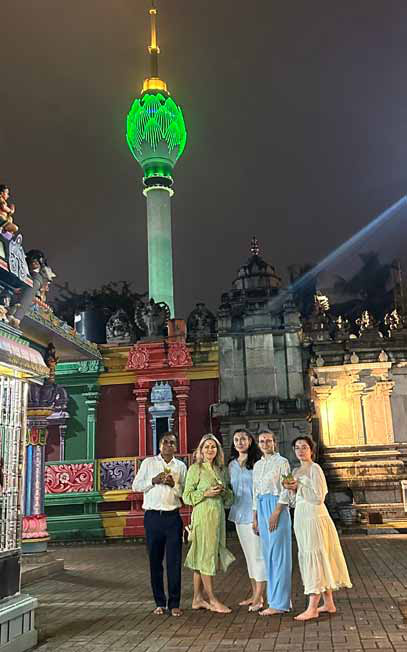

M aria L. Popova, the Director of the Russian House in Colombo and First Secretary of the Russian Embassy in Sri Lanka is a distinguished figure in cultural diplomacy. Widely respected for her efforts, her leadership has played a pivotal role in strengthening cultural ties between Sri Lanka and Russia.
M aria L. Popova, the Director of the Russian House in Colombo and First Secretary of the Russian Embassy in Sri Lanka is a distinguished figure in cultural diplomacy. Widely respected for her efforts, her leadership has played a pivotal role in strengthening cultural ties between Sri Lanka and Russia.
Jaffna Monitor hellojaffnamonitor@gmail.com 28 M aria L. Popova, the Director of the Russian House in Colombo and First Secretary of the Russian Embassy in Sri Lanka is a distinguished figure in cultural diplomacy. Widely respected for her efforts, her leadership has played a pivotal role in strengthening cultural ties between Sri Lanka and Russia. A writer herself, she has actively fostered literary connections between the two nations and has contributed significantly to the translation of Russian literary works into Sinhala. With a professional journey that began in prominent media institutions — including Capital FM Moscow — and later at the Consulate General of Russia in San Francisco, she has seamlessly transitioned into a diplomatic role focused on cultural outreach. Over the course of nearly a triennium in Colombo, she has exerted a profound impact on bilateral cultural exchange, spearheading substantive collaborations across education, the arts, and public diplomacy. Beyond her official remit, Maria L. Popova is also recognized for her refined aesthetic sensibilities and steadfast advocacy for Sri Lankan fashion. She artfully amalgamates Russian elegance with indigenous textile traditions and passionately champions the regional fashion and textile industry. This exclusive interview with Jaffna Monitor unveils a cultural envoy whose endeavors continue to bridge nations—not merely through diplomatic channels, but through the enduring conduits of people, literature, fashion, and shared heritage. In your view, what makes the Russian Cultural Center in Sri Lanka significant? The Russian Cultural Center in Colombo holds a special place in the history of Sri Lanka– Russia relations. It was officially established in its current location in 1986 under the Russia–Sri Lanka Friendship Agreement, though its presence dates back even earlier as the Soviet Cultural Center in Colombo 2. The inauguration was a historic moment, attended by then-President J.R. Jayewardene, who ceremonially opened the center and planted a sapling in the courtyard — a tree that has since become a beloved symbol of our enduring friendship. Over the years, that tree has become part of our identity — featured in numerous cultural events, from literary tributes to art performances. During one celebration of Alexander Pushkin’s birthday, for example, we even recreated a mermaid scene on its branches, inspired by one of his fairy tales. Its presence continues to inspire and anchor our community activities. But more importantly, the Russian Cultural Center exists to share Russia's rich artistic and intellectual heritage—from literature, ballet, chess, and classical music to language and higher education. It’s a place where cultures connect and where Sri Lankans can explore Russia’s contributions to global civilization. One of our key missions is to promote Russian higher education. In 2024 alone, the Russian Government offered 50 fully funded scholarships to Sri Lankan students in fields ranging from medicine and engineering to arts BY: Our Special Correspondent
Jaffna Monitor hellojaffnamonitor@gmail.com 29 and humanities. With nearly four applicants per seat, the demand has been remarkable, prompting discussions to increase the quota to 80 scholarships next year — at the request of Sri Lankan authorities. What fields of study are the Russian scholarships offered for, and how are the students selected? The scholarships offered by the Russian Federation cover a wide range of academic streams, including Bachelor’s, Master’s, and Postgraduate degrees. One of the most popular fields among Sri Lankan students is General Medicine. Over the years, many Sri Lankan graduates from renowned institutions like the Moscow State Medical University, the Pirogov Russian National Research Medical University, and, of course, the highly popular People’s Friendship University have gone on to build highly successful careers — some of them now hold prominent positions in government institutions and the healthcare sector in Sri Lanka. Their success has inspired the next generation, including their children, to pursue medical education in Russia. Beyond medicine, we’ve also observed an increasing interest in Tourism and Hospitality Management, Information Technology, Natural Sciences, and Fashion Design. During my two and a half years here, I’ve personally been impressed with how fashion is developing in Sri Lanka. Many young designers have immense talent and creativity. To support this growing creative sector, we are planning a collaborative fashion show featuring Sri Lankan designers inspired by Russian culture. How are students selected for Russian Government scholarships? Is there a district quota system? No, there is no district or ethnic quota system. All Sri Lankan citizens with valid passports are eligible to apply, regardless of background. The selection is entirely merit-based, transparent, and competitive. Applications are submitted via the official platform – education-in-russia.com – usually starting in September. The process includes: • Online Registration: Uploading certified translations of O/L and A/L results. • University Preferences: Applicants may list up to five preferred Russian universities. • Document Review: Our team in Colombo checks eligibility and completeness. • Final Selection: Based on academic results and supporting materials such as articles, certificates, or awards. To assist applicants, we run a 24/7 live support chat in English and Sinhala and regularly hold online/offline seminars across Sri Lanka. Recently, we hosted a Russian Higher Education Fair with 22 universities from across Russia — from Crimea to Siberia — offering students the chance to interact with university representatives and explore diverse academic programs. Currently, we collaborate with nearly 30 Russian universities, including leading institutions in Aviation, Medicine, Engineering, IT, and Design. One of our notable partnerships is with a prominent aviation university in St. Petersburg, which is attracting increasing interest from Sri Lankan students.
Jaffna Monitor hellojaffnamonitor@gmail.com 30 Our mission is to keep strengthening these academic links and ensure that more Sri Lankan students have access to world-class education in Russia. What efforts are being made to connect Sri Lankan readers with Russian literature? Russian literature has always resonated with Sri Lankan readers — with enduring admiration for authors like Maxim Gorky, Alexander Pushkin, and Anton Chekhov. But we are now also promoting contemporary Russian voices, bridging the gap between modern Russian authors and Sri Lankan translators, poets, and critics. A key example is the Sinhala translation of the internationally acclaimed novel “Laurus” by Eugene Vodolazkin, known for his blend of historical fiction and spiritual themes. This translation was done by Felix Fernando, a distinguished philologist who has played a vital role in expanding the reach of Russian literature in Sri Lanka. Another writer we’re proud to introduce is Alexander Tsypkin, a popular short story writer, screenwriter, and cultural commentator. His Christmas short story was also translated into Sinhala by Felix Fernando, marking a step forward in showcasing contemporary Russian literature to local audiences. To further support this literary exchange, the Russian House hosts an annual Literature Festival, bringing together translators, writers, and academics from across Sri Lanka. It’s a platform to celebrate Russian literary heritage while building new bridges of collaboration and creativity. Has there been any effort to translate Russian literature into Tamil in Sri Lanka? At present, most of the Russian literary translations available in Sri Lanka are in Sinhala. However, we recognize the importance of making Russian literature accessible to Tamil-speaking audiences. This is an area where we are actively seeking collaboration. If there is someone with a strong command of both Russian and Tamil, we would be delighted to work with them. It is an open invitation to anyone who wishes to contribute to this cultural and linguistic bridge. We are eager to support such initiatives and are open to partnerships with literary organizations, translators, and educational institutions in the Tamil-speaking regions of Sri Lanka. How important is literature to Russia as a country and to its citizens? It is part of our DNA. It’s something we are born into, something that becomes a part of our identity from a very young age. Speaking for myself, I simply cannot imagine my life without literature. I’m an avid reader. Not just within Russian literature, but globally, I find great inspiration in both the classics and modern literary voices. But when it comes to Russian literature specifically, I feel a deep, almost unexplainable sense of pride. Some people even start learning the Russian language just to be able to read their masterpieces in the original text. That, to me, is one of the greatest tributes to the power of literature — and to the cultural depth of our country.
Jaffna Monitor hellojaffnamonitor@gmail.com 31 At the beginning of this year, we launched a new video project dedicated to great Russian literary figures. I realized that while many people in Sri Lanka have heard of Pushkin or Sergei Yesenin, they often aren't familiar with other remarkable Russian poets and authors — especially those from the Silver Age of Russian poetry in the 1960s and 70s, a period of extraordinary artistic expression during the Soviet era. This era produced poets whose works remain relevant and powerful today. I want to introduce these voices to the Sri Lankan audience. Through our new initiative, we aim to feature translated readings, visual storytelling, and educational materials about poets like Boris Pasternak, Bella Akhmadulina, Joseph Brodsky, Anna Akhmatova, and others who deserve global recognition. These are the voices that shaped the emotional and philosophical fabric of a generation — and they deserve to be heard beyond Russian borders. Do the younger generation of Russian children still read like previous generations, especially given the influence of smartphones and television? This is a challenge faced globally. The digital age has fundamentally changed how young people engage with the world. Speaking personally, I have a 14-year- old son, and I find myself constantly negotiating with him about screen time. Whenever he has a free moment, his smartphone is in his hands — usually watching TikTok or short videos. He’s a bright boy, and it’s not that he lacks depth or curiosity, but like many of his peers, the allure of fast content and constant stimulation is very strong. When I was growing up, books were my escape. I always had one in my hands. We didn’t have internet, we didn’t have streaming platforms or social media, and going to the cinema was an occasional treat. Naturally, books became our closest companions. Today, the environment has changed. The modern world is fast, digital, and visually driven — and we cannot wish it away. But I don’t see this as a tragedy. Rather, I believe it’s up to Maria L. Popova at Sri Kaileswaram Kovil in Captain’s Garden

Jaffna Monitor hellojaffnamonitor@gmail.com 32 us — the older generation, educators, cultural leaders, and parents — to find creative and engaging ways to draw young people back to the joy of literature. That’s why we launched a new initiative this year: a visual storytelling project dedicated to classic and modern Russian literature. It combines poetry, imagery, voice, and animation to make these works more accessible and appealing to the digital-native generation. Would you consider organizing a literary or cultural project in the Northern and Eastern parts of Sri Lanka, where the Tamil community — with its own rich literary tradition — is the majority? I would absolutely love to. If there is genuine interest from the Tamil-speaking community, I see no reason why we shouldn’t. In fact, I would be truly excited to collaborate on something meaningful in that region. Sri Lankan Tamils have a deeply rooted and profound literary heritage, and as someone who believes in literature as a bridge between cultures, I see this as a beautiful opportunity for mutual exchange. This is an open invitation — if someone with the necessary linguistic expertise is interested, we at the Russian House would be eager to collaborate. On the education front, I also want to extend our support to students in the North and East who are interested in studying in Russia. We understand that traveling from places like Jaffna or Batticaloa to Colombo can be challenging and costly. That’s why we are actively promoting online “Meet & Greet” sessions with Russian universities. These virtual open days allow students to: • Join remotely from anywhere in the country • Watch real-time presentations by Russian universities • Ask questions directly to university representatives and academic advisors • Learn about available programs, scholarships, and the application process So here’s what I propose: whenever we organize these sessions — which we do regularly — we will inform Jaffna Monitor. You can then help spread the word across your community. Interested students can simply join online — there’s no need to travel. Why don’t you open a Russian Cultural Center in Jaffna? I would genuinely love to see that happen — but unfortunately, it’s not a decision I can make on my own. The establishment of an official branch of the Russian House in any city requires an intergovernmental agreement between the Russian Federation and the Government of Sri Lanka. That said, while we may not be able to open a full-fledged center right away, we’ve had positive experiences establishing satellite projects, particularly Russian language courses in various parts of the country. One such example is our collaboration with the University of Peradeniya about a year and a half ago, where we successfully launched a Russian language course. The response was very encouraging — we had over 20 students, conducted examinations according to official standards, and even created a small literary corner on campus. However, after a change in university leadership, the new management
Jaffna Monitor hellojaffnamonitor@gmail.com 33 decided not to continue with the program, despite its popularity. So for now, that initiative has been paused. Then why not consider launching something similar at a university in the Northern or Eastern Province? We are open to that idea, absolutely. It’s something we are thinking about seriously. But for such a project to succeed, we need to find a qualified and passionate Russian language teacher who is either based in Jaffna or willing to travel from Colombo regularly. Personally, I am a maximalist. As long as I am here, I am committed to expanding the presence of the Russian language and culture across the island. In fact, we’ve already seen success in other regions. For instance, we launched a Russian language course at the Police Academy in Galle for officers in the Tourist Police Division. The program began on June 10, 2022, and ran for a full year with 25 officers participating. It was a meaningful step in bridging the communication gap between Russian tourists and local authorities — and a great example of how Russian language skills can have practical, professional applications in Sri Lanka. So yes, if we can identify the right partners and passionate educators, Jaffna or any part of the North or East would be an exciting next step for us. What was the purpose of teaching Russian to police officers? The purpose was very straightforward — to help them better communicate with Russian tourists, especially in key tourist hubs like Galle, where multiple tourist routes converge. There’s been a steady increase in Russian visitors to Sri Lanka in recent years, and naturally, there’s a growing need for basic Russian language skills among frontline service providers. Due to high demand, we launched a Russian language course for Tourist Police officers in Galle in 2022. It was extremely popular and the response exceeded our expectations. The officers were incredibly disciplined, never missed a class, and showed a genuine eagerness to learn. When I visited them a few months later, I was amazed — they stood up and spoke confidently in Russian. It was truly heartwarming to see how much effort they had put in. Following this success, we were approached by the National Police Academy in Colombo, and in February this year, we launched another Russian language course there. Once again, they’re showing excellent results. The course also provides an official Russian language certificate, which for many officers has been a valuable addition to their professional qualifications. Why do so many Russian tourists choose Sri Lanka? What makes it so special for them? Of course, affordability plays a part. Compared to other tropical destinations like the Maldives — which has become quite expensive in recent years — Sri Lanka still offers great value. For those staying in three- or four-star hotels, it’s an ideal choice. Even though five-star resorts have raised their prices, the experience here feels more authentic, and more immersive. But what truly draws Russians is the combination of stunning natural beauty and ancient cultural richness. Russians aren’t just
Jaffna Monitor hellojaffnamonitor@gmail.com 34 looking for a place to lie on a beach — they want to feel, to learn, to connect. And Sri Lanka offers that rare chance to walk barefoot along golden shores in the morning… and by afternoon, be standing before thousand-year- old ruins that whisper the stories of forgotten kings. We both revere our past, honor tradition and take pride in our heritage. Whether it’s a museum in Moscow or a sacred stupa in Anuradhapura, there is a shared respect for what came before us. And that creates a sense of familiarity — a kind of quiet kinship. With eight UNESCO World Heritage Sites, dramatic landscapes, spiritual sanctuaries, and welcoming people, it feels like a journey that feeds both the heart and the mind. And personally? I can tell you from experience: this island stays with you. Every month, I visit the Sri Kaileswaram Kovil in Captain’s Garden, right in Colombo. It’s a Hindu temple — ancient, powerful, full of color, light, and energy. I call it my place of power. The rituals, the chanting, the fire — it’s not just something to see, it’s something to feel. Every time I bring someone new there — friends, colleagues, even visiting diplomats — they’re overwhelmed. Some cry. Some just fall silent. But everyone leaves changed. How enthusiastic are Sri Lankans about learning the Russian language? At the Russian House in Colombo, we offer certified language courses at A1 and A2 levels, which attract a wide range of participants — from students preparing to study in Russia to professionals in tourism, hospitality, and business. Our language department includes five qualified instructors: three native Russian- speaking female teachers and two Sri Lankan philologists, both graduates of the Peoples’ Friendship University of Russia (RUDN). These Sri Lankan instructors are also respected translators who have enriched local literature by rendering Russian classics and modern works into Sinhala. Is there any similar initiative for the tourism industry? Absolutely. We recognized the need to expand beyond the police force and created a program called “Russian for Tourism”, which is now offered at the Russian House in Colombo — primarily on weekends. The course teaches: • Basic conversational Russian • Grammar essentials • Key vocabulary for hospitality • Descriptions of Sri Lanka’s major tourist attractions — in Russian The program is designed to be practical, user- friendly, and affordable — with fees kept reasonable to make it widely accessible. With more Russian companies expressing interest in hiring Sri Lankans, we’ve developed an intensive Russian language course for migrant workers planning to move to Russia. The course is tailored to prepare them for the mandatory Russian language exam required by Russian immigration authorities for foreign workers. This exam is crucial — without passing it, entry for employment is not permitted. Our course is available both online and offline and is structured to fast-track learners depending on how quickly they need to travel.
Jaffna Monitor hellojaffnamonitor@gmail.com 35 What kinds of jobs are Sri Lankans going for in Russia? The opportunities are diverse. Many Sri Lankans are being hired in manufacturing plants, production lines, courier and delivery services, and increasingly, in the garment sector — especially women skilled in tailoring and clothing production. This demand is rising steadily. We even had a delegation from a Russian state agency involved in international labor relations visit the Russian House in Colombo. We discussed structured, transparent recruitment pathways for Sri Lankan workers. Why are Sri Lankans choosing to go to Russia for work? There were allegations that some were sent to war under the pretext of employment — can you clarify? One of the main reasons Sri Lankans are opting to work in Russia is the attractive salary packages. On average, workers can expect to earn around USD 500 per month, which is considerably higher than many local wages, especially in rural areas. In addition to the salary, employers often provide accommodation, healthcare, and other basic needs, allowing workers to save and send money home to support their families. However, it is true that there were isolated incidents involving unofficial recruitment channels, where a few individuals were reportedly misled and ended up being drawn into the conflict zone under the guise of employment. These were deeply unfortunate cases. Since then, both the Sri Lankan and Russian

Jaffna Monitor hellojaffnamonitor@gmail.com 36 governments have taken corrective action. Authorities have tightened oversight, and I can confidently assure you that such incidents no longer occur under official, legal pathways. Today, employment opportunities are offered through regulated systems, overseen by Russian government institutions such as immigration and labor departments, ensuring transparency, legitimacy, and safety for foreign workers. We strongly advise all job seekers to use only verified recruitment channels to avoid exploitation. Russia continues to welcome skilled Sri Lankan workers — especially in sectors like manufacturing, logistics, textile production, and courier services — and many companies report high satisfaction with their Sri Lankan employees, valuing their discipline, reliability, and work ethic. What other activities and programs do you offer at the Russian Centre in Colombo? One of our most popular programs is the Chess Classes for students. As you may know, chess holds a very special place in Russian culture and history. That legacy has sparked strong interest among Sri Lankan students. The classes we offer are well-structured, progressive, and taught with genuine passion — and it’s incredibly rewarding to see students so engaged in a game that sharpens both their intellect and focus. We also offer Ballet Classes, which have become increasingly popular, especially among school-aged children and young adults. Our instructors bring the elegance, discipline, and technique of the Russian ballet tradition right here to Colombo. For many students, learning ballet is a journey into grace, strength, posture, and self-expression. They often share how it has improved not just their physical fitness, but also their confidence, poise, and mental clarity. It's a beautiful blend of art and wellness, and we’re proud to witness such enthusiasm from Sri Lankan youth. These programs — along with our Russian language courses, film screenings, cultural festivals, and literary events — are part of our broader mission: to create a vibrant, inclusive space where Sri Lankans can explore the depth and diversity of Russian culture, while also discovering new dimensions of their own creativity and curiosity. Maria L. Popova with friends at Sri Kaileswaram Kovil, Captain’s Garden.
